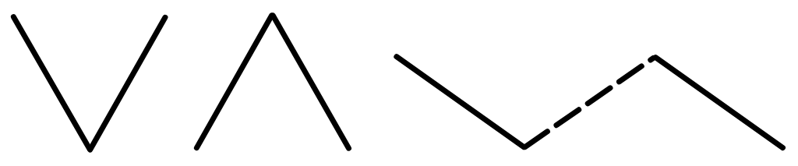
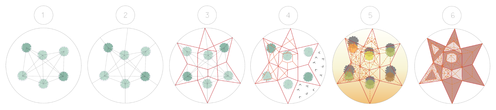
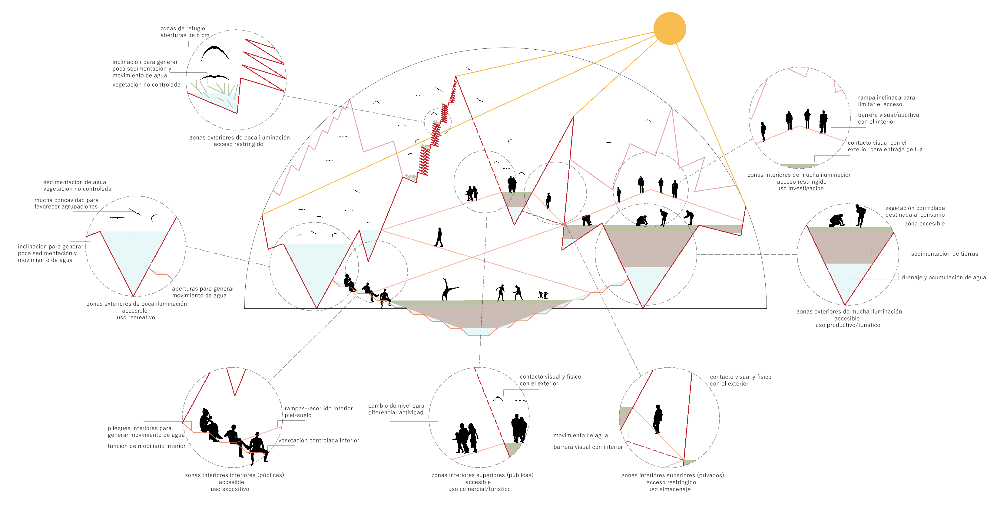
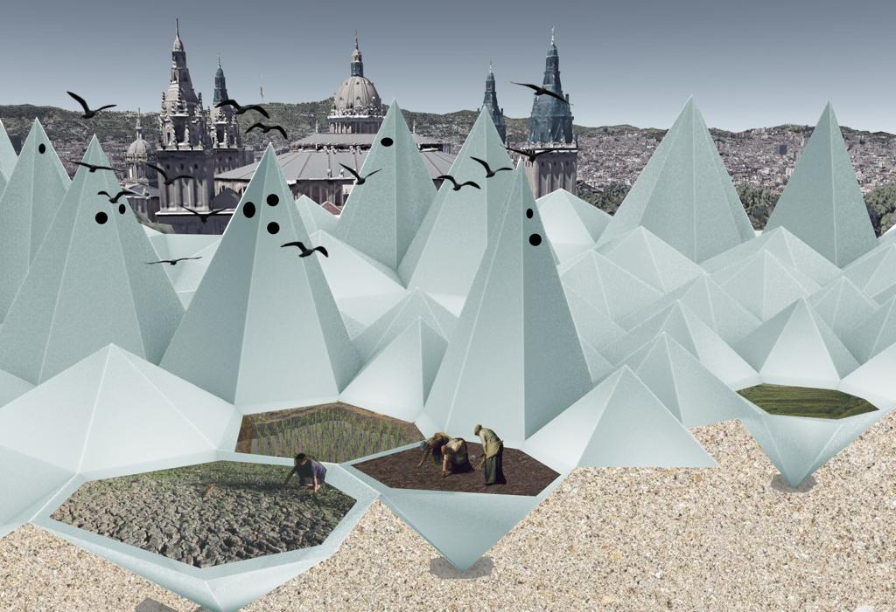
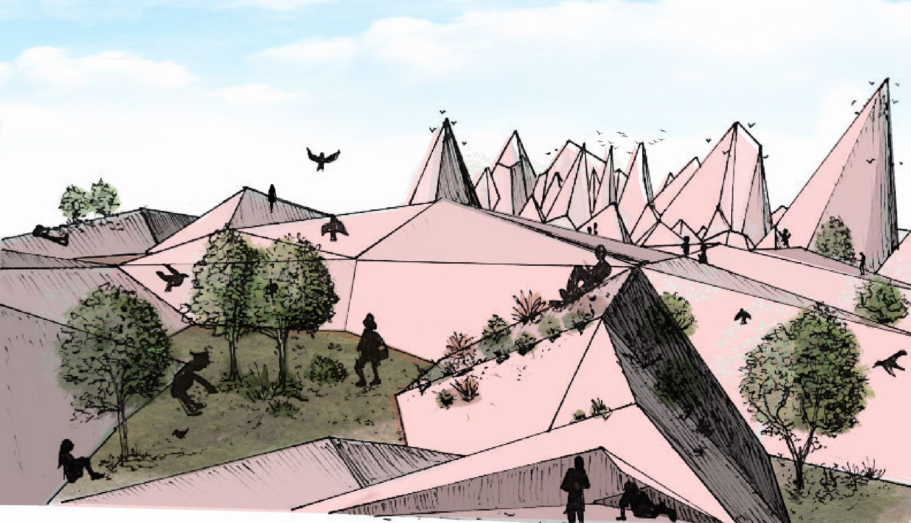
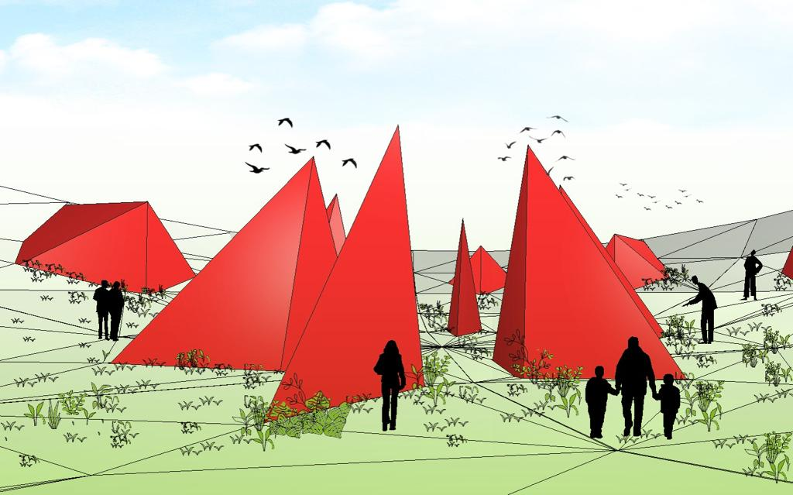
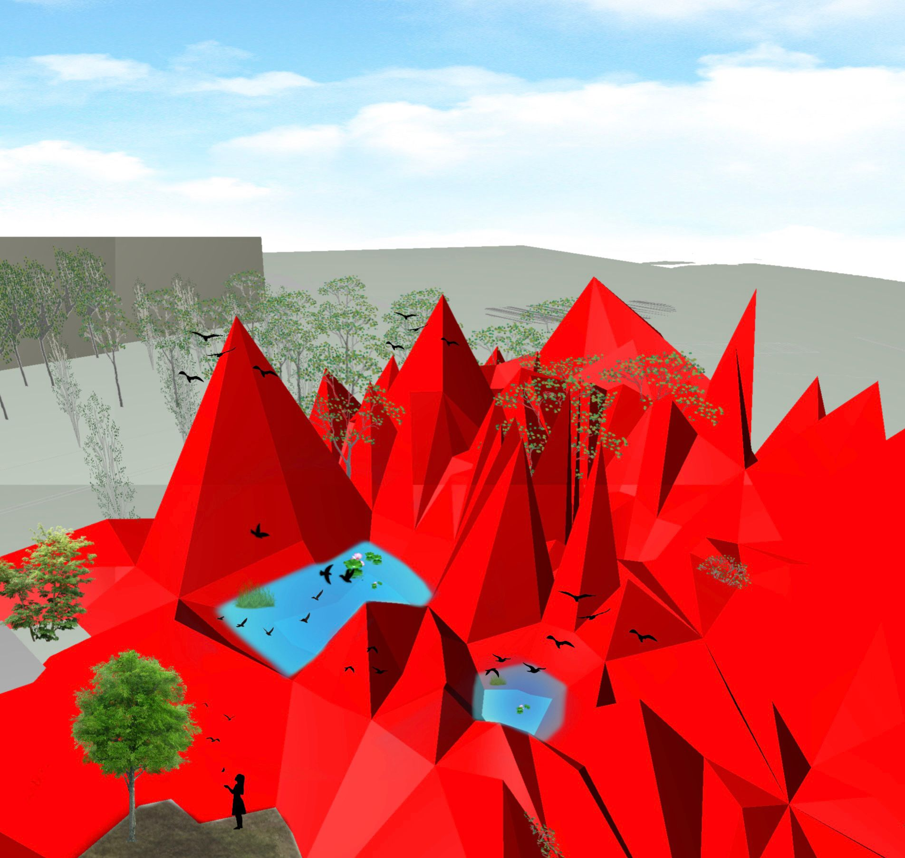
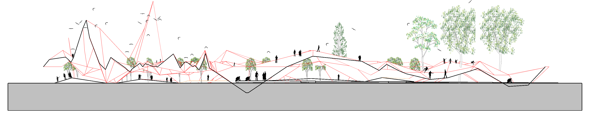

Pliegues de convivencia
INTEGRACIÓN DE BIODIVERSIDAD MEDIANTE LOS VÉRTICES DE LA PIEL
Keywords: paramétrico, sistema, Rhino, Grasshopper, planificación urbana, paisajismo, naturaleza, biodiversidad
El tema elegido para este estudio es la potenciación de la biodiversidad en un espacio originalmente natural que ha sido urbanizado. El objetivo es mantener las especies presentes y modificar sus interacciones para crear una sinergia entre ellas que beneficie la convivencia, generando una geometría orgánica que actúe a la vez como piel y organizador del espacio. Las especies que han de convivir en nuestro caso son: vegetación, aves y humanos. A través de un esquema de funciones y necesidades, se establecen relaciones productivas entre estas especies. Se destacan 4 funciones principales: recolección de suelo, recolección y distribución de agua, protección y recorridos humanos. A partir de estas funciones podemos detectar 2 tipos de pliegues: cóncavos y convexos, donde los primeros serán los recolectores y los segundos los protectores y las uniones entre ellos se convertirán en los distribuidores.

Estos pliegues vienen definidos por las condiciones externas del proyecto, como el sol, la vegetación o el flujo de personas. El tratamiento de estos pliegues ofrece diferentes niveles de privacidad y, por tanto, de actividad. En función de estas condiciones, el diseño se modifica para adaptarse adecuadamente a ellas. Probemos el diseño para el caso de una parcela circular en la cual existe vegetación:

Paso 1: Crear red entre núcleos de vegetación existente que queremos preservar y estimular.
Paso 2: Unir dichos núcleos con el perímetro de la parcela, en este caso al tratarse de un círculo las uniones serán tangenciales.
Paso 3: Unir los puntos elegidos en el perímetro con las uniones entre núcleos para crear una triangulación alrededor de estos núcleos.
Paso 4: Subdividir las triangulaciones. En este ejemplo, puesto que las aves prefieren estar en zonas alejadas del ruido humano se subdividen las zonas más alejadas de los puntos de aglomeración.
Paso 5: Decidir qué triangulaciones serán cóncavas o convexas dependiendo de la radiación solar incidente.
Paso 6: Generar la geometría final.
De este modo, el diseño obtenido es único para cada escenario. Al mismo tiempo, el proyecto se va auto-acondicionando a medida que crece, de modo que no sólo es capaz de conservar y mejorar la biodiversidad actual, sino que también puede generar otra nueva. Su crecimiento queda limitado sólo por la accesibilidad, es decir, un recorrido destinado a los humanos donde la altura sea inferior a 2 metros no sería posible, puesto que va en contra de la normativa de accesibilidad, así que cuando el proyecto alcanzase este límite no tendría sentido continuar creciendo. ¿Cómo quedaría el proyecto si limitásemos si crecimiento en el caso de estudio al interior de una semiesfera? Un posible resultado sería algo así:

La compatibilidad de usos y la multifuncionalidad del espacio son conceptos que han tomado valor en las últimas décadas, comenzando quizás con la arquitectura orgánica de mediados del siglo XX. Una arquitectura que, en palabras del propio Frank Lloyd Wright, busca "ver el conjunto de la vida, y servir el conjunto de la vida". Sin embargo, son pocos los ejemplos actuales donde se busque promover una multifuncionalidad que parte desde la piel de la propia construcción. Es interesante experimentar con sistemas que tomen una composición que promueva la armonía entre las funciones y los usuarios donde cada uno tiene su propio espacio pero a la vez está conectado con el resto.
m




m
